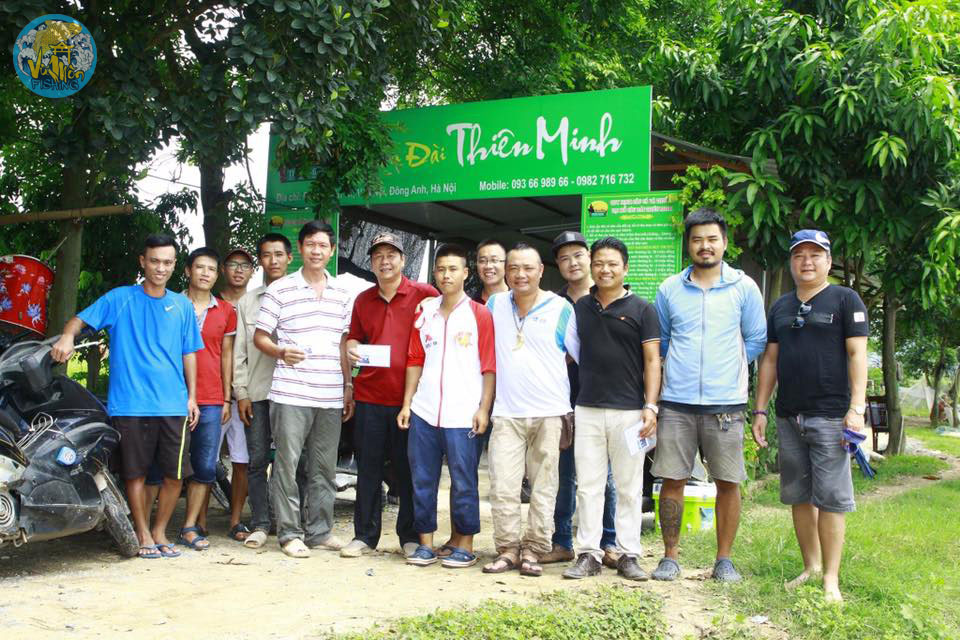

Tìm kiếm
Câu Đài- Môn thể thao lành mạnh, thú vị có thể bạn chưa biết!
Những năm gần đây, cùng với sự phát triển của kinh tế xã hội, câu cá đã ko còn đơn thuần là hình ảnh cây cần trúc và những con cá đồng cải thiện bữa ăn nhà nông, câu cá thực sự đã và đang trở thành một phong trào, một xu hướng hay đúng hơn là một môn thể thao ngày càng thu hút đông đảo người chơi từ thành thị đến nông thôn. Không phân biệt tầng lớp, không phân biệt nghề nghiệp, tuổi tác hay thậm chí là giới tính...Trong rất nhiều những cách thức câu cá khác nhau: câu lục, câu lăng xê, câu truyền thống, câu lure, câu biển....thì có thể nói phát triển nhanh nhất, rộng nhất,t hu hút nhiều người chơi nhất trên phạm vi cả nước thì phải kể đến bộ môn Câu Đài.Vậy câu Đài là gì? Để đáp ứng nhu cầu tìm hiểu về bộ môn câu cá mới lạ này, VŨ MÔN Fishing xin được mạn phép tổng hợp, biên soạn từ các tài liệu nước ngoài có cơ sở khoa học, cơ sở lịch sử, cũng như chia sẻ chút kiến thức nhỏ bé cũng như quan điểm cá nhân, kính mong được đông đảo bạn đọc cũng như anh em cần thủ dày dạn kinh nghiệm sửa đổi bổ sung thêm những gì còn thiếu sót trong bài viết!
Phần I. Nguồn gốc câu Đài:
Trong một số bài viết trước kia ở VN cũng đã giới thiệu sơ lược: là bộ môn được du nhập từ Đài Loan vào VN nên được gọi là câu Đài. Đúng vậy, đây là bộ môn được người Đài Loan lưu truyền qua Việt Nam. Tuy nhiên, lật trở lại lịch sử thì bộ môn này lại có nguồn gốc xuất phát từ Nhật Bản và được người dân xử sở mặt trời mọc phát minh từ những năm đầu của thập kỷ 70 của thế kỷ 20 với cái tên gọi Đông Á Điếu Pháp (cách câu Đông Á) và còn được gọi với cái tên quen thuộc nữa là HERA (tạm hiểu là cách câu cá diếc thi đấu), được sử dụng rộng rãi tại Nhật Bản. Cấu trúc một bộ dây câu cũng như cách câu Hera về cơ bản vẫn được lưu giữ cho đến ngày hôm nay. Đầu những năm 80, Hera được người Nhật Bản mang đến Đài Loan và nhanh chóng được ưa thích rộng rãi, thậm chí còn có phần lấn át so với chính tại nơi phát minh ra nó. Do đặc thù địa lý nên thời tiết khí hậu Đài Loan nắng nóng quanh năm, cá diếc ko nhiều mà thay vào đó là cá Rô Phi, và người Đài Loan đã áp dụng những kĩ thuật Hera một cách tối ưu nhất khi dùng câu cá rô phi, có rất nhiều sự cải tiến từ kĩ thuật cho đến dụng cụ và mồi câu.
Đến những năm cuối của thập kỷ 80, cùng với sự mở cửa giao lưu chính trị xã hội giữa Đài Loan và Đại Lục Trung Quốc, chính xác là tháng 5/1989, lần đầu tiên một giải thi câu giao lưu được tổ chức tại Quảng Đông Trung Quốc, người Đài Loan với 6 gương mặt đại diện đã chiến thắng và ẵm trọn bộ giải thưởng từ 1 đến 6 trước sự ngỡ ngàng và ngưỡng mộ của đông đảo các cần thủ Trung Quốc. Cái tên Câu Đài được người TQ mệnh danh từ đó và trở thành cái tên chính thức cho bộ môn này, lưu truyền cho đến tận hôm nay. Cũng sau lần giao lưu đó, những cần thủ xuất sắc nhất Đài Loan thường xuyên qua lại Đại Lục và phát triển sự nghiệp về lĩnh vực này tại TQ. Chỉ trong thời gian ngắn tại TQ, nhiều nhà máy sản xuất đồ câu Đài, mồi câu Đài, trường dạy câu Đài...mọc lên như nấm sau mưa, bộ môn Câu Đài cũng chính thức bước vào giai đoạn phát triển hưng thịnh thần tốc nhất trong suốt quá trình lịch sử hình thành.
Những năm sau đó, một số ít thương nhân Đài Loan và Trung Quốc đem theo bộ môn câu Đài đến với các nước lân cận như Malayxia,Thái Lan,Lào...và tất nhiên là có cả Việt Nam. Với đặc thù vị trí địa lý là nước láng giềng với Trung Quốc, có sự giao thương rộng rãi nên bộ môn Câu Đài tại Việt Nam có sự phát triển cả về chất lẫn lượng tốt hơn rất nhiều so với các quốc gia khác trong khu vực. Chúng ta thường xuyên có sự cọ sát giao lưu du đấu giữa Việt Nam và Trung Quốc, trình độ các cần thủ được nâng cao, tiếp thu những kiến thức kĩ thuật mới nhất. Và những năm gần đây thì câu Đài đã chính thức là một trong những bộ môn câu cá phát triển nhanh nhất, rộng nhất, thu hút nhiều người tham gia nhất tại Việt Nam.
Từ những năm 2016 tại Miền Bắc chỉ duy nhất có Hồ câu Đài Thiên Minh tại Hà Nội là hồ câu tiên phong đầu tiên về mô hình chuyên câu Đài dịch vụ, có cả hồ câu thi đấu, câu game…Là sân chơi, là nơi giao lưu, chia sẻ câu Đài cho các anh em.

Đến nay, Hà Nội có đến cả trăm hồm hồ chuyên Đài, các tỉnh từ Bắc đến Nam đâu đâu cũng có. Sân chơi cho anh em câu Đài được đã không còn bị bó hẹp, cũng là điều rất thuận lợi cho phong trào câu Đài ngày càng lớn mạnh.
Vậy nhập môn câu Đài cần những gì? Nếu mới gia nhập bộ môn này anh em đừng quên theo dõi bài viết sau của chúng tôi!
Còn Tiếp…!
Hải Thiên MInh

VŨ MÔN FISHING
Hotline: 0867.58.57.55
Cơ sở 1 ECO : 208 Park River- Ecopark Hưng Yên
 Hotline Chăm sóc KH : 093.66.989.66
Hotline Chăm sóc KH : 093.66.989.66
Cơ sở 2 Hà Nội: Kiot 10- Toà CT9- KĐT Định Công- Hoàng Mai- Hà Nội
Hotline- Zalo: 0862.06.06.18
Cơ sở 3 Hưng Yên: 779 Nguyễn Văn Linh- P. Hiến Nam- TP. Hưng Yên
Hotline- Zalo: 0862.25.1233
Cơ sở 4 Ninh Bình : Phố Đi Bộ Ninh Bình- TP. Ninh Bình
Hotline- Zalo: 033.688.5335